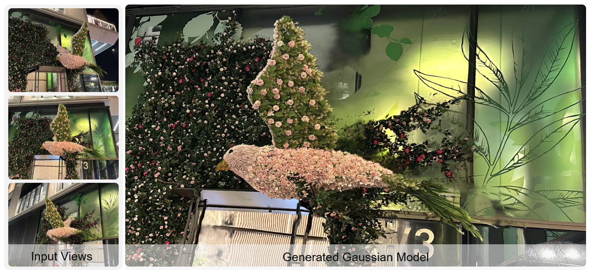
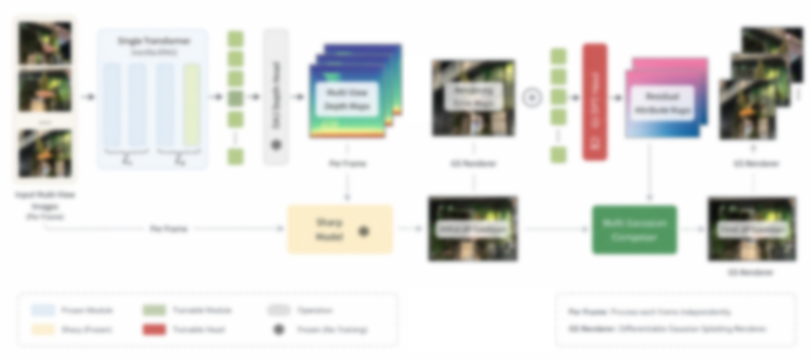

Multi-view · Feed-forward 3D Gaussian
Sharp3D: High-Fidelity 3D Gaussian Scenes Generation from Multiple Images
This project is still under active research. The page will be updated with code, data, and fuller evaluations as results stabilize.
Crysta AI
Overview
Feed-forward 3D reconstruction methods such as VGGT and Depth Anything V3 (DA3) have achieved strong performance in predicting cameras, depth, and point clouds from sparse views. However, most existing methods treat Gaussian Splatting as a byproduct of geometric prediction, without dedicated design for the Gaussian representation itself. As a result, the reconstructed Gaussians are often over-smoothed and contain redundant primitives, limiting rendering sharpness and visual fidelity. On the other hand, SHARP produces highly detailed and sharp Gaussian representations from a single image, but does not enforce multi-view consistency. We present Sharp3D, a feed-forward framework that combines the multi-view geometric priors of DA3 with the high-fidelity Gaussian generation capability of SHARP. Sharp3D aligns per-view Gaussian predictions and introduces opacity-based ownership estimation to suppress duplicate Gaussians, retaining only the minimal set needed to explain the scene. During training, we keep the DA3 depth and camera modules and the SHARP backbone largely frozen, and optimize only the Gaussian head, adapter, and fusion modules. Sharp3D produces multi-view consistent 3D Gaussian representations with substantially improved sharpness and realism, while preserving accurate scene geometry.

TL;DR
Sharp3D is a feed-forward framework for sparse views: it keeps strong multi-view geometry in the spirit of DA3 (cameras, depth, structure), then predicts Gaussians in a SHARP-like regime—sharp and detailed, but aligned across views—without the over-smoothed or redundant splats common when Gaussians are only a side output of geometry-first models.
- One forward pass · no per-scene optimization
- DA3-style geometry priors + SHARP-style splat head
- Three-stage training: geometry filter → ownership → joint finetune
Method
Sharp3D runs in one feed-forward pass: sparse views first yield DA3-style geometric priors (cameras, depth, and scene structure); these cues then condition a SHARP-style Gaussian head that predicts 3D splats—sharp and detailed, but aligned across views—with geometry preserved end-to-end.

Compare: Ours vs StraightForward
Ours is our full Sharp3D method. StraightForward is a naive baseline built by taking the cameras and geometry as DA3 calibrates and predicts, then combining them with SHARP’s Gaussian-splatting output in a direct pipeline—DA3 geometry and SHARP splats stitched together without Sharp3D’s geometry filtering, ownership preserving, or joint finetuning stages. Drag the divider to compare.
Bird


Drag the center line left or right.
Cat


Drag the center line left or right.
Garden


Drag the center line left or right.
Qualitative Results
Sparse input views (left) and the reconstructed 3D Gaussian scene (right). Drag to orbit, scroll to zoom. Switch scenes with the arrows; click Load 3D Gaussian to load each model.
Interactive previews use the
SparkJS
renderer with SPZ-compressed splats for faster loading. Transcoding to SPZ may cause
minor differences in appearance compared to the original reconstruction.
For matching renders, download the source
.ply
files from our
Hugging Face dataset
and view them in
SuperSplat.
Three-stage Training
Sharp3D is trained in three sequential stages: geometry is cleaned first, cross-view ownership of Gaussians is stabilized, then the full stack is refined jointly. Link checkpoints or configs per stage here when you release them.
Stage 1 · Geometry Filtering Training
Trains or adapts the multi-view geometric pathway so cameras, depth, and structure are filtered into reliable signals for the Gaussian branch—reducing noise that would otherwise smear or duplicate splats.
Stage 2 · Ownership Preserving Training
Encourages each Gaussian to maintain consistent responsibility across views—so appearance and geometry stay aligned with sparse inputs before full joint optimization.
Stage 3 · Joint Finetuning
End-to-end finetuning of geometry and splat parameters together for sharp, multi-view consistent renders while preserving the scene layout learned in earlier stages.
Citation
Replace with the official BibTeX entry after acceptance.
@misc{sharp3d2026,
title = {Sharp3D: High-Fidelity 3D Gaussian Scenes Generation from Multiple Image},
author = {Fuqiang Zhao},
year = {2026},
howpublished = {https://zhaofuq.github.io/Sharp3D/},
note = {Project page}
}